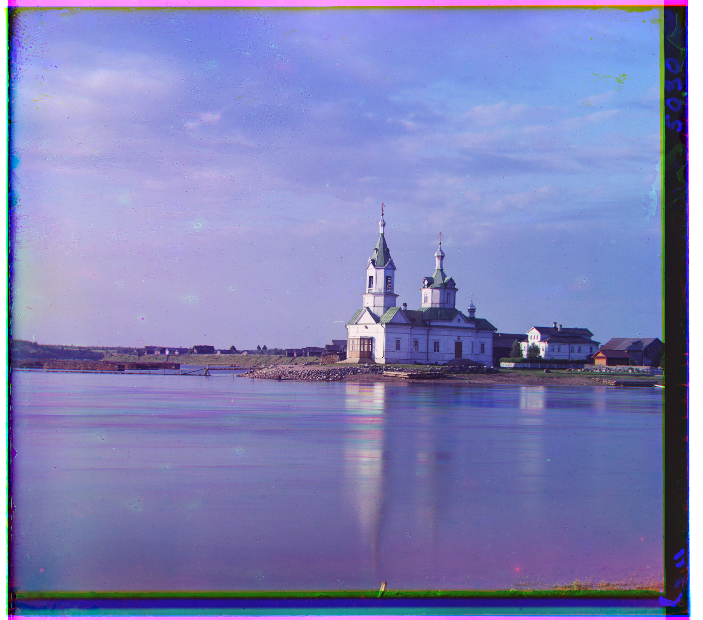

CS180: Intro to Computer Vision and Computational Photography
Images of the Russian Empire
Due Date: Friday, September 12, 2025 at 11:59 PM
Project Overview & Approach
This project involved taking three grayscale images (representing the blue, green, and red channels) of images from the Prokudin-Gorskii collection and aligning them to create a fully colored image.
Naive Single-scale alignment
The initial approach I used was a naive, straightforward way of aligning the image channels. In this method, I would match two channels at a time (green to blue, then red to blue). This approach would exhaustively search over a range of possible x and y shifts from the first image to the second image (over a 15 pixel range in both directions). For each shift, I calculated a similarity metric, specifically the Sum of Squared Differences or the L2 norm between the overlapping regions of the two images.
The L2 norm is essentially taking the difference between each pixel within the overlapping region of the two images, squaring that difference, and then summing all of those squared differences together. The lower the L2 norm, the less differences there are between the two images, and thus they are better aligned. This is expressed mathematically as:
The shift that resulted in the lowest error was chosen as the optimal alignment for that channel. Repeating for the green and red channels, I would then combine the three aligned channels into a single color image.
This naive approach worked reasonably well for smaller images, but for larger images it was either unable to find a good alignment or would take unreasonably long to run. To improve performance, I implemented an image pyramid approach.
Multi-scale pyramid alignment
The multi-scale pyramid alignment method improves both the speed and accuracy of channel alignment, especially for large images. Instead of having to exhaustively search over a large range of pixels to align these large images, this approach recursively aligns images at progressively smaller scales. It then uses these lower-resolution alignments to inform and refine the alignment at higher resolutions, which allows for efficient global search of the best alignment.
The steps of the pyramid alignment approach are:
First, I created a function to downsample an image by a factor of 2.
Next, I would recurse using the downscaled images, which should return the optimal shift alignment of the two downscaled images.
Using this downscaled shift, I then multiply it by 2 again to bring it up to the current scale.
Finally, I do a small local search around this updated shift.
This local search uses the naive algorithm from earlier, using the L2 error to align the channels doing an exhaustive search over a local neighborhood. In this case, we can use a smaller area than 15x15 as we are more likely to be in a better place than if we had just started with the large images.
The function then returns the optimal shift that aligns the frames.
If an image was smaller than 128 pixels, the pyramid algorithm just ran the naive exhaustive search algorithm.
This approach was okay, but for some images such as the "emir" image, it was still very misaligned. To improve this, I added added an automatic border cropping step to remove any borders that affected alignment. Additionally, for the "emir" image, aligning to the blue channel did not work well, so I aligned to the green channel which worked better.
Comparison: "emir" Image Before and After Cropping
Below is a side-by-side comparison of the "emir" image before and after applying automatic border cropping. The left image (pyramid_emir_uncropped.jpg) shows the result after pyramid alignment but before cropping, where some misalignment and color fringing remain due to the borders. The right image (pyramid_emir.jpg) shows the result after cropping, with borders removed and improved channel alignment.
pyramid_emir_uncropped.jpg Before croppingpyramid_emir.jpg After cropping
Results on Example Images
Here are the results on three images that were smaller in size, and thus the naive alignment algorithm was sufficient.
cathedral.jpg Blue shift: (-5, -2) Red shift: (7, 1)
monastery.jpg Blue shift: (3, -2) Red shift: (6, 1)
tobolsk.jpg Blue shift: (-3, -3) Red shift: (4, 1)
Here are the results on the remaining images that were too large for the naive algorithm, and thus the pyramid approach was used.

church.tif Blue shift: (-25, -4) Red shift: (33, -8)
emir.tif Blue shift: (-49, -24) Red shift: (57, 17)
harvesters.tif Blue shift: (-59, -16) Red shift: (65, -3)
icon.tif Blue shift: (-41, -17) Red shift: (48, 5)
italil.tif Blue shift: (-38, -21) Red shift: (38, 15)
lastochikino.tif Blue shift: (2, 2) Red shift: (78, -7)
lugano.tif Blue shift: (-41, 16) Red shift: (52, -13)
melons.tif Blue shift: (-81, -10) Red shift: (96, 3)
self_portrait.tif Blue shift: (-78, -29) Red shift: (98, 8)
siren.tif Blue shift: (-49, 6) Red shift: (47, -18)
three_generations.tif Blue shift: (-53, -14) Red shift: (58, -3)